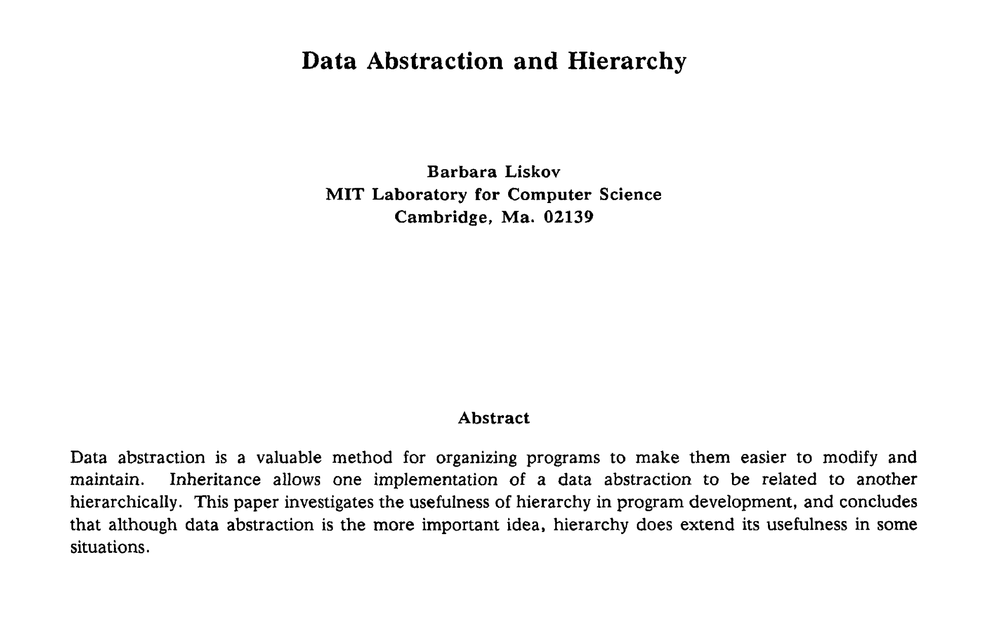
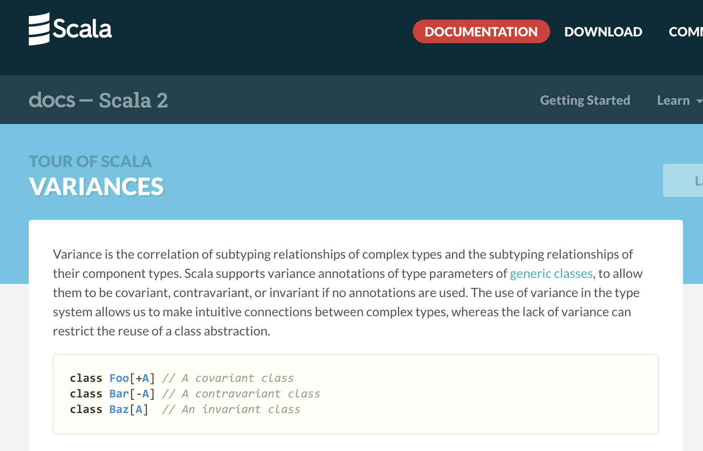
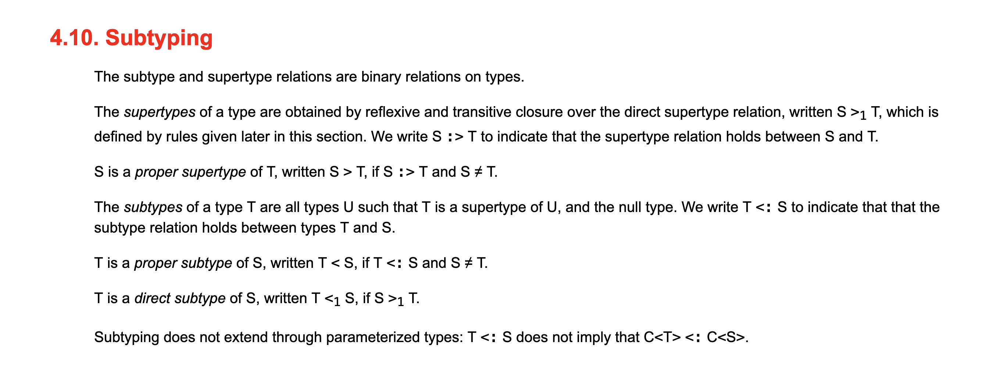

### Questions 1. Scala Variance <!-- .element: class="fragment" --> + What is with the + and - symbols on <a href="#/scala-variances">type parameters</a>? + Do you need to know about them? + How do library authors use them to make their libraries more usable? 2. Variance under Inheritance <!-- .element: class="fragment" --> + How does Java deal with inheritance of generic classes and arrays? + What <a href="#/java-specification">language</a> design decisions were made to get there? + Is there a relationship between Java's solution and Scala's? 3. Inheritance and hierarchy as a Data Abstraction <!-- .element: class="fragment" --> + How should we think about and use <a href="#/data-abstraction-and-inheritance">inheritance</a>? + What is subtyping? 4. Data Abstraction <!-- .element: class="fragment" --> + What types of abstraction are there? + What is Data Abstraction?

Back
#### Scala variances  <p><a href="#/questions/0">Back</a></p>
Back
#### Java Language Specification <p>  </p> <p> <a href="#/questions/1">Back</a> </p>